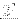
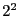

| Parameter | Variable | Description |
|---|---|---|
| Size of FFT: () | FFTSize | The number of channels in the complex FFT core. The number of positive frequency channels output is half of this. |
| Bit Width | BitWidth | The number of bits in each real and imaginary sample as they are carried through the FFT. Each FFT stage will round numbers back down to this number of bits after performing a butterfly computation. |
| Number of Simultaneous Inputs: () | n_inputs | The number of parallel time samples which are presented to the FFT core each clock. This must be at least . The number of output ports is half of this value. |
| Quantization Behavior | quantization | Specifies the rounding behavior used at the end of each butterfly computation to return to the number of bits specified above. |
| Overflow Behavior | overflow | Indicates the behavior of the FFT core when the value of a sample exceeds what can be expressed in the specified bit width. |
| Add Latency | add_latency | Latency through adders in the FFT. |
| Mult Latency | mult_latency | Latency through multipliers in the FFT. |
| BRAM Latency | bram_latency | Latency through BRAM in the FFT. |
| Port | Dir. | Data Type | Description |
|---|---|---|---|
| sync | in | Boolean | Indicates the next clock cycle contains valid data |
| shift | in | Unsigned | Sets the shifting schedule through the FFT. Bit 0 specifies the behavior of stage 0, bit 1 of stage 1, and so on. If a stage is set to shift (with bit = 1), that every sample is divided by 2 at the output of that stage. |
| In | in | Inherited | The time-domain stream(s) to channelized. |
| sync_out | out | Boolean | Indicates that data out will be valid next clock cycle. |
| of | out | Boolean | Indicates an overflow occurred at some stage in the FFT. |
| Out | out | Inherited | The frequency channels. |
This document was generated using the LaTeX2HTML translator Version 2002-2-1 (1.71)
Copyright © 1993, 1994, 1995, 1996,
Nikos Drakos,
Computer Based Learning Unit, University of Leeds.
Copyright © 1997, 1998, 1999,
Ross Moore,
Mathematics Department, Macquarie University, Sydney.
The command line arguments were:
latex2html -local_icons -split 1 sp_fft_wideband_real.tex
The translation was initiated by Documentor on 2009-01-08